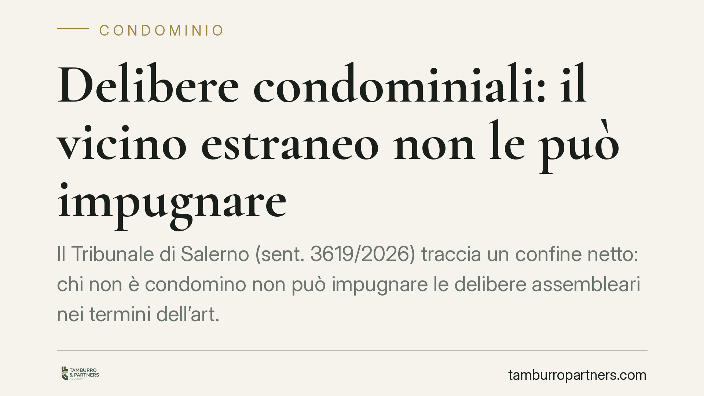

Delibere condominiali: il vicino estraneo non le può impugnare
Il Tribunale di Salerno (sent. 3619/2026) traccia un confine netto: chi non è condomino non può impugnare le delibere assembleari nei termini dell'art. 1137 c.c., ma solo eccepirne la nullità assoluta. Un chiarimento che pesa sui rapporti con proprietari confinanti e imprese, e che impone attenzione a come si costruiscono gli obblighi di spesa.

Il caso
Un proprietario confinante, estraneo alla compagine condominiale, aveva contestato una delibera assembleare con cui si decideva la ripartizione di alcune spese che, a suo dire, lo coinvolgevano. Il Tribunale di Salerno, con la sentenza n. 3619/2026, ha respinto la pretesa, fissando un principio che merita attenzione sia per i condomini sia per chi, pur non facendone parte, si trova a confinare con un edificio in condominio.
La questione è duplice: chi può impugnare una delibera e con quali strumenti; e quando un soggetto estraneo può essere chiamato a partecipare alle spese deliberate dall'assemblea.
Inquadramento normativo
L'art. 1137 c.c. disciplina l'impugnazione delle deliberazioni assembleari. È uno strumento riservato ai condomini: la norma parla di deliberazioni "contrarie alla legge o al regolamento" che "ogni condomino assente, dissenziente o astenuto" può impugnare entro il termine di decadenza di trenta giorni. Si tratta quindi di un rimedio soggettivamente circoscritto, che presuppone la qualità di partecipante al condominio.
Altra cosa è la nullità, regolata in via generale dall'art. 1421 c.c. La nullità può essere fatta valere da "chiunque vi ha interesse" e non è soggetta ai termini stringenti dell'impugnazione. Riguarda però vizi ben più radicali: delibere con oggetto impossibile o illecito, prive degli elementi essenziali, o che incidono su diritti individuali indisponibili.
La distinzione non è teorica. L'annullabilità ex art. 1137 c.c. colpisce vizi "procedurali" o di conformità al regolamento, ma va azionata nei termini e da chi è legittimato. La nullità ex art. 1421 c.c. è più ampia nella legittimazione ma più stretta nei presupposti.
Cosa dice il Tribunale di Salerno
Il giudice salernitano ha stabilito che il soggetto estraneo al condominio non rientra tra i legittimati all'impugnazione ex art. 1137 c.c. Non essendo condomino, non ha accesso al rimedio dell'annullabilità. Gli resta unicamente la possibilità di far valere la nullità della delibera ai sensi dell'art. 1421 c.c., sempre che ne ricorrano i presupposti e sussista un concreto interesse.
Il secondo passaggio è altrettanto rilevante: una delibera assembleare non può, da sola, imporre obblighi di spesa a chi non fa parte del condominio. L'assemblea è sovrana al suo interno, ma non può vincolare terzi. Per obbligare il proprietario confinante a contribuire a determinati lavori o costi serve un titolo diverso: un contratto separato, una convenzione, un accordo che quel soggetto abbia effettivamente sottoscritto.
Implicazioni pratiche
Per il condominio, la pronuncia è un monito a non confidare nella delibera come strumento per coinvolgere terzi nelle spese. Se un intervento interessa anche una proprietà confinante, l'obbligo di partecipazione va costruito contrattualmente, non calato dall'alto con un verbale assembleare.
Per il proprietario confinante, il messaggio è di segno diverso: chi non è condomino non può usare l'impugnazione ordinaria per contestare scelte altrui, ma non è nemmeno automaticamente vincolato a esse. La delibera, rispetto a lui, è "res inter alios" — un atto tra altri soggetti — salvo che abbia assunto obblighi con un proprio consenso.
Per le imprese edili che eseguono lavori riguardanti più proprietà, l'indicazione è di verificare a monte chi sarà effettivamente tenuto al pagamento, pretendendo accordi scritti con tutti i soggetti coinvolti.
Cosa fare in concreto
- Verificate la legittimazione prima di impugnare: se non siete condomini, l'art. 1137 c.c. non vi è accessibile; valutate la strada della nullità solo in presenza dei presupposti.
- Non fate gravare spese su terzi tramite delibera: formalizzate ogni obbligo di partecipazione con un contratto o una convenzione sottoscritta dal confinante.
- Mettete per iscritto gli accordi tra proprietà diverse, specificando quote, modalità e tempi di pagamento, prima dell'avvio dei lavori.
- Rispettate i termini di decadenza dell'impugnazione (trenta giorni) quando siete condomini legittimati: la nullità ha presupposti diversi e più ristretti.
- Fate verificare la natura del vizio prima di agire: annullabilità e nullità seguono regole e strumenti non intercambiabili.
Ogni condominio ha una storia a sé.
Se gestisci un'amministrazione e vuoi un confronto su una specifica questione condominiale, scrivi allo studio. Ti rispondiamo entro un giorno lavorativo.